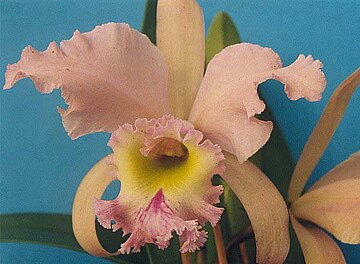

Orchids are plants that belong to the family Orchidaceae (/ˌɔːrkɪˈdeɪsi.iː, -si.aɪ/) a diverse and widespread group of flowering plants with blooms that are often colourful and fragrant. Orchids are cosmopolitan plants found in almost every habitat on Earth except glaciers. The world's richest diversity of orchid genera and species is found in the tropics.
Orchidaceae, along with the Asteraceae, is one of the two largest families of flowering plants. It contains about 28,000 currently accepted species distributed across 763 general
The Orchidaceae family encompasses about 6–11% of all species of seed plants. The largest genera are Bulbophyllum (2,000 species), Epidendrum (1,500 species), Dendrobium (1,400 species), and Pleurothallis (1,000 species).
Some orchids, such as Neottia and Corallorhiza, lack chlorophyll, so are unable to photosynthesize. Instead, these species obtain energy and nutrients by parasitizing soil fungi through the formation of orchid mycorrhizae. The fungi involved include those that form ectomycorrhizas with trees and other woody plants, parasites such as Armillaria, and saprotrophs. These orchids are known as myco-heterotrophs, but were formerly (incorrectly) described as saprophytes as it was believed they gained their nutrition by breaking down organic matter. While only a few species are achlorophyllous holoparasites, all orchids are myco-heterotrophic during germination and seedling growth, and even photosynthetic adult plants may continue to obtain carbon from their mycorrhizal fungi. The symbiosis is typically maintained throughout the lifetime of the orchid because they depend on the fungus for nutrients, sugars, and minerals.
All orchids are perennial herbs that lack any permanent woody structure. They can grow according to two patterns:
Monopodial: The stem grows from a single bud, leaves are added from the apex each year, and the stem grows longer accordingly. The stem of orchids with a monopodial growth can reach several meters in length, as in Vanda and Vanilla.
Sympodial: Sympodial orchids have a front (the newest growth) and a back (the oldest growth). The plant produces a series of adjacent shoots, which grow to a certain size, bloom, and then stop growing and are replaced. Sympodial orchids grow horizontally, rather than vertically, following the surface of their support. The growth continues by the development of new leads, with their leaves and roots, sprouting from or next to those of the previous year, as in Cattleya. While a new lead is developing, the rhizome may start its growth again from a so-called 'eye', an undeveloped bud, thereby branching. Sympodial orchids may have visible pseudobulbs joined by a rhizome, which creeps along the top or just beneath the soil. With ageing the pseudobulb sheds its leaves and becomes dormant. At this stage it is often called a backbulb. Backbulbs still hold nutrition for the plant, but then a pseudobulb usually takes over, exploiting the last reserves accumulated in the backbulb, which eventually dies off, too. A pseudobulb typically lives for about five years. Orchids without noticeable pseudobulbs are also said to have growths, an individual component of a sympodial plant.


The other important use of orchids is their cultivation for the enjoyment of the flowers. Most cultivated orchids are tropical or subtropical, but quite a few that grow in colder climates can be found on the market. Temperate species available at nurseries include Ophrys apifera (bee orchid), Gymnadenia conopsea (fragrant orchid), Anacamptis pyramidalis (pyramidal orchid) and Dactylorhiza fuchsii (common spotted orchid).
Orchids of all types have also often been sought by collectors of both species and hybrids. Many hundreds of societies and clubs worldwide have been established. These can be small, local clubs, or larger, national organisations such as the American Orchid Society. Both serve to encourage cultivation and collection of orchids, but some go further by concentrating on conservation or research.
The term "botanical orchid" loosely denotes those small-flowered, tropical orchids belonging to several genera that do not fit into the "florist" orchid category. A few of these genera contain enormous numbers of species. Some, such as Pleurothallis and Bulbophyllum, contain approximately 1700 and 2000 species, respectively, and are often extremely vegetatively diverse. The primary use of the term is among orchid hobbyists wishing to describe unusual species they grow, though it is also used to distinguish naturally occurring orchid species from horticulturally created hybrids.
New orchids are registered with the International Orchid Register, maintained by the Royal Horticultural Society. Several thousand new grexes are registered each year.
Symbolism
Orchids have many associations with symbolic values. For example, the orchid is the City Flower of Shaoxing, China. Cattleya mossiae is the national Venezuelan flower, while Cattleya trianae is the national flower of Colombia. Vanda Miss Joaquim is the national flower of Singapore, Guarianthe skinneri is the national flower of Costa Rica and Rhyncholaelia digbyana is the national flower of Honduras. Prosthechea cochleata is the national flower of Belize, where it is known as the black orchid. Lycaste skinneri has a white variety (alba) that is the national flower of Guatemala, commonly known as Monja Blanca (White Nun). Panama's national flower is the Holy Ghost orchid (Peristeria elata), or 'the flor del Espiritu Santo'. Rhynchostylis retusa is the state flower of the Indian state of Assam where it is known as Kopou Phul.
Orchids native to the Mediterranean are depicted on the Ara Pacis in Rome, until now the only known instance of orchids in ancient art, and the earliest in European art. A French writer and agronomist, Louis Liger, invented a classical myth in his book Le Jardinier Fleuriste et Historiographe published in 1704, attributing it to the ancient Greeks and Romans, in which Orchis the son of a nymph and a satyr rapes a priestess of Bacchus during one of his festivals the Bacchanalia and is then killed and transformed into an orchid flower as punishment by the gods, paralleling the various myths of youths dying and becoming flowers, like Adonis and Narcissus; this myth however does not appear any earlier than Liger, and is not part of traditional Greek and Roman mythologies.